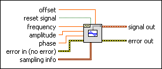
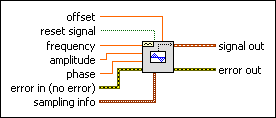

Triangle Waveform VI
Owning Palette: Waveform Generation VIs
Requires: Full Development System
Generates a waveform containing a triangle wave.

 Add to the block diagram Add to the block diagram |
 Find on the palette Find on the palette |
Owning Palette: Waveform Generation VIs
Requires: Full Development System
Generates a waveform containing a triangle wave.

| Add to the block diagram |
Find on the palette |
 |
offset is the DC offset of the signal. The default is 0.0. | ||||
 |
reset signal, if TRUE, resets the phase to the phase control value and the time stamp to zero. The default is FALSE. | ||||
|
frequency is the frequency of the waveform in units of hertz. The default is 10. | ||||
|
amplitude is the amplitude of the waveform. The amplitude is also the peak voltage. The default is 1.0. | ||||
|
phase is the initial phase, in degrees, of the waveform. The default is 0. The VI ignores phase if reset signal is FALSE. | ||||
 |
error in describes error conditions that occur before this node runs. This input provides standard error in functionality. | ||||
 |
sampling info contains sampling information.
| ||||
 |
signal out is the generated waveform. | ||||
 |
error out contains error information. This output provides standard error out functionality. |
If triangle wave is represented by the sequence Y, the VI generates the pattern according to the following equation.
y[i] = amp × tri(phase[i]), for i = 0, 1, 2, …, n – 1,
where amp = amplitude, n = number of samples (#s), and tri[p] is:
(2 × pmod/180.0) if 0  pmod < 90.0
pmod < 90.0
or
(2 × (1 – pmod/180.0)) if 90.0 pmod < 270.0
or
(2 × (pmod/180.0 – 2.0)) if 270.0 pmod < 360.0
where pmod = p modulo 360.0 and phase[i] is:
initial_phase + frequency × 360.0 × i/Fs
where initial_phase = phase if reset signal is TRUE, or last output phase if reset signal is FALSE.
This VI is reentrant so that it can be used to simulate a continuous acquisition from a triangle wave function generator. If the input control reset signal is FALSE, subsequent calls to this VI produce the output triangle wave waveform containing the next n samples of a triangle wave. This VI remembers the phase and time stamp of the current waveform and uses this to continuously generate and time stamp the subsequent waveforms, as long as the reset signal input is FALSE.